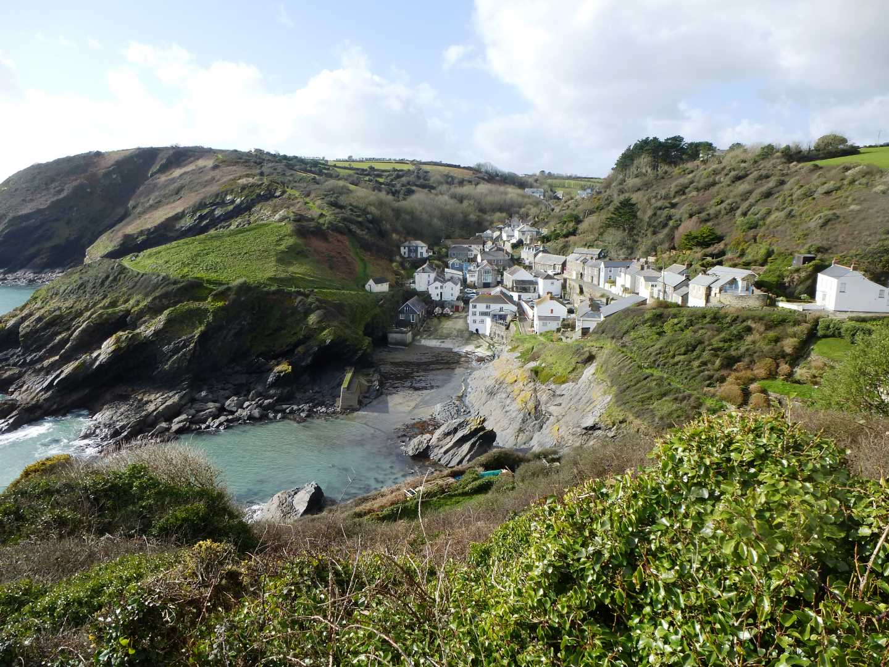
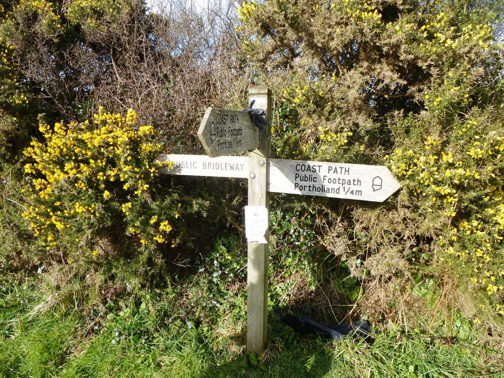

Start Ref: 959 413
End Ref: 959 413
Distance: 4 miles
Time: 2.5hrs
We start in East Portholland, and walk west. If the tide is going out then you can walk across the beach to get to West Portholland, but if it is in then we follow the road up and around. In both cases, we need to use the little footbridge on the far side of the hamlet, which will lead us (quite steeply) up and on to the coastal path. When we see the solitary tree silhouetted against the skyline, then we can start to breathe easy as we have reached the top.
Following the path along with the hedge on one side and grazed open land to our left, we eventually arrive at a sign stating Coast Path to Portloe (to our left) or Public Bridleway (straight ahead). For this walk we are going to head left and down, although we will return to this point on our return leg. Down the path leads us, until we reach and cross over a little footbridge just below Tregenna.
Here we climb a little, again, as we head towards the next point, which is called Caragloose Point, and from here you can see Shag Rock just offshore. One more steep section to go, which is Hartriza Point before reaching Portloe Point a few hundred meters further on.
Only as we round Portloe Point does the hidden village of Portloe come into view, so well nestled into the valley does it sit. Here is an ideal spot to dip the toes, but do take care as this is very much a working fishing harbour. You also have a choice of refreshment and eating stops here.
After our stop, we are going to head up the hill (there are two ways out of Portloe, we want to take the one which we would have turned right on, if we had decided not to stop for a break) towards and past the car park. Continue on and up the hill passed the bus stop and past a footpath sign on our left. As the road bears left, with a house on the corner, our footpath through the fields is on our right. Here we want to go diagonally across the field to the top left and over the hedge stile. Follow the wide track, through the farm and then bear left so as to join up with the road.
I`m not a fan of walking on the road, but this is a necessary (and rather pleasant) evil as it joins us to our next bit of footpath which is on our right, just past Corwenna Barn. This is actually a bridleway, and if we follow it now, it will bring us back to our decision point of earlier in the day. As we rejoin the coastal path we are now heading down and back towards the solitary tree at the top of the original path. Descend down the path and across the footbridge and we are back at West Portholland, and the short walk back to East Portholland.
If you get a chance, I have always found that the Pebbles, Cafe and Crafts at East Portholland to be exceptionally welcoming, if only for a quick cup of tea – although I have often indulged in some very welcome food as well.
I hope that you enjoy this section of Cornwall.